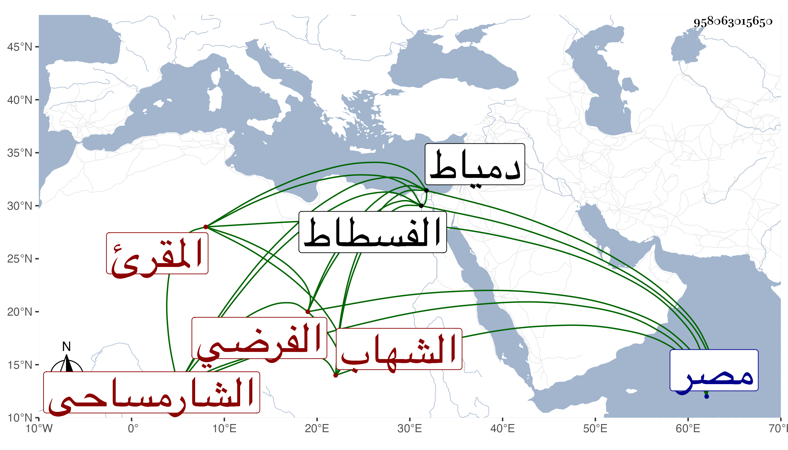

0902Sakhawi.DawLamic.ITO20230111-ara1.EIS1600.958063015650
Biography ID: 958063015650
الشارمساحي براء مكسورة ثم سين مهملتين نسبة لقرية من ريف مصر بحري الفسطاط بالقرب من دمياط من الدهقلية المقرئ الفرضي الشهاب أحمد بن وفتح الدين صدقة بن علي بن محمد بن مخلص الدين محمد ويعرف بابن نور الدين وابنه الفخر عثمان وابنه محمد والقاضي الزين عبد اللطيف بن علي والكتبي الزين يوسف ابن محمد بن عبد الله بن محمد بن عبد الرحمن وابن أخيه أحد النواب شمس الدين محمد بن الأمين محمد بن الشمس محمد .
